高空点火器
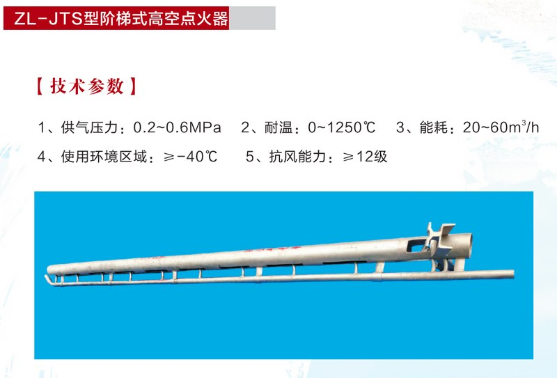
ZL-JTS 阶梯式高空点火器
火种阶梯传递方式，故障率低；关键部件避开高温区；高纯石英绝缘（耐温1700°C）；点火电极循环移动拉弧放电，自洁能力强；防护板保护，防雨雪结冰污染。
查看产品详情 →
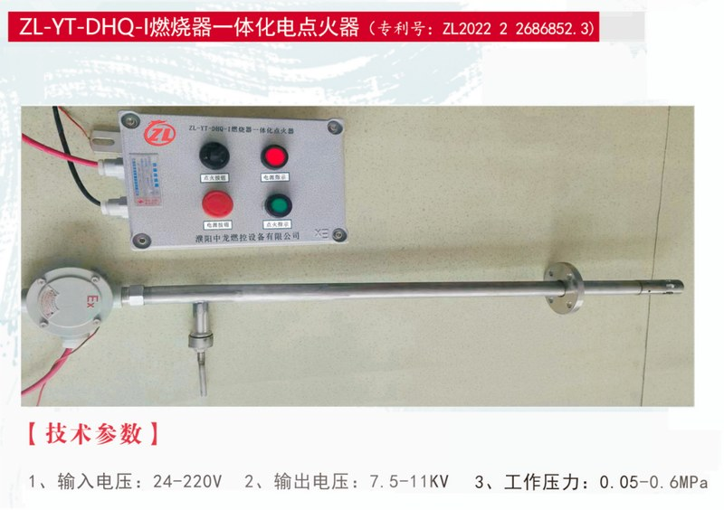
ZL-YT-DHQ-I 燃烧器一体化电点火器
一体化设计，适用于锅炉及各类燃烧器；高低压自适应输入，安装简便，点火可靠。
查看产品详情 →
长明灯系列
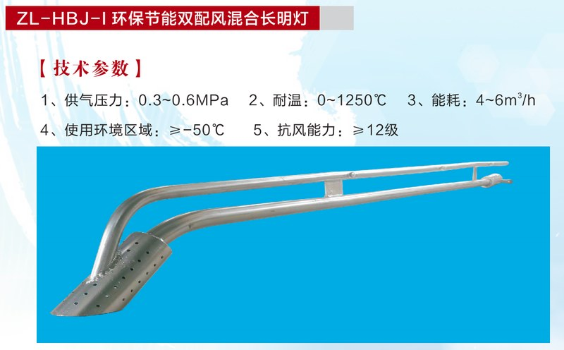
ZL-HBJ-I 环保节能双配风混合长明灯
文丘里引射原理，火焰可调至粉蓝色；双重点火保障；中国神华实测节能93.5%，耗气量从37.65降至2.45Nm³/h。
查看产品详情 →
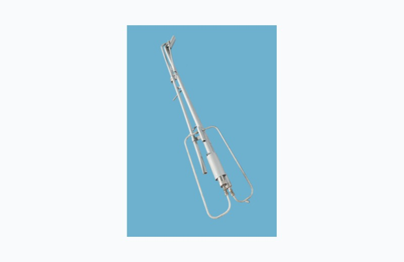
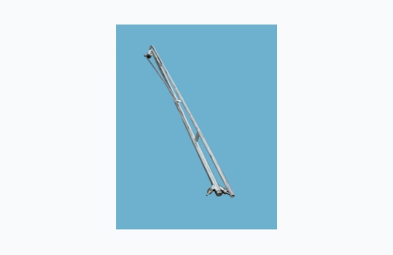
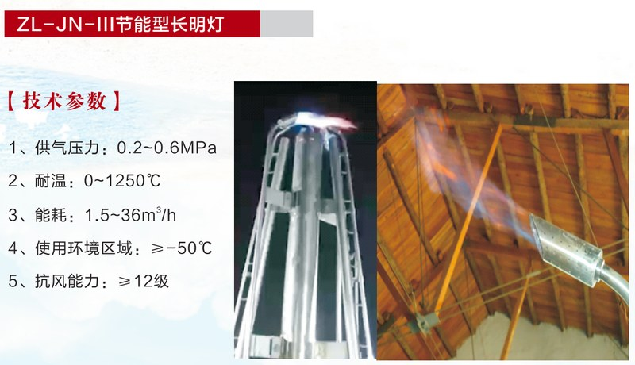
防爆高压发生器
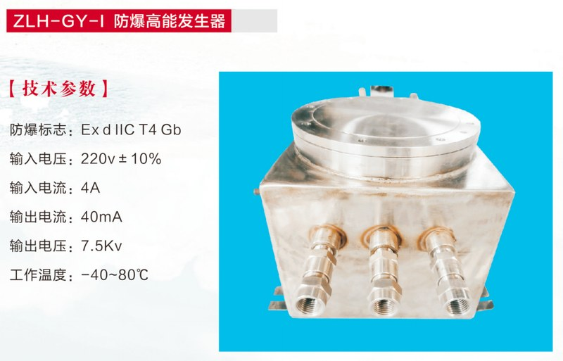
ZLH-GY-I 防爆高能发生器
限压、限流、限温三重保护；内部环氧树脂全胶封；外壳最高表面温度≤85°C；防护等级IP54。
查看产品详情 →
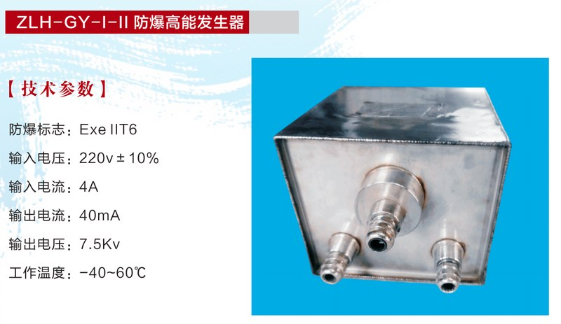
ZLH-GY-I-II 防爆高能发生器
增安型防爆，适用于工厂用II区T1-T6组爆炸性混合物危险场所；长寿命设计，安全可靠。
查看产品详情 →
地面点火装置 & 火焰探测器
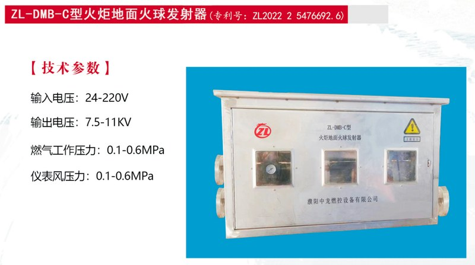
ZL-DMB-C 火炬地面火球发射器
地面内传焰点火装置，适用于各类火炬的地面点火需求；与高空点火系统配合，形成完整点火保障体系。
查看产品详情 →
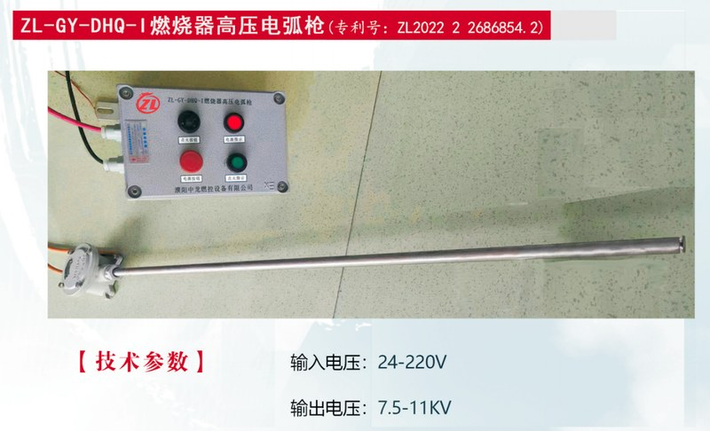
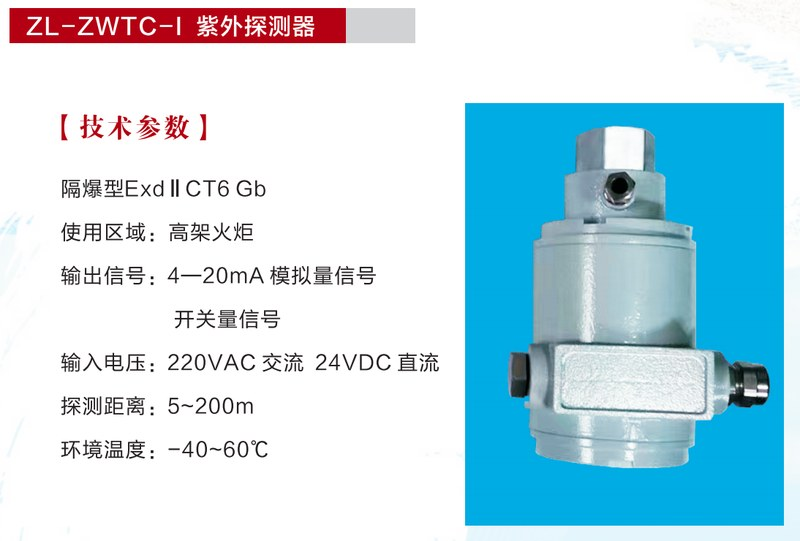
ZL-ZWTC-I / II 紫外火焰探测器
I型适用高架火炬（5~200m），II型适用地面火炬及锅炉（5~100m）；隔爆型设计，双重信号输出。
查看产品详情 →
绝缘子与核心配件
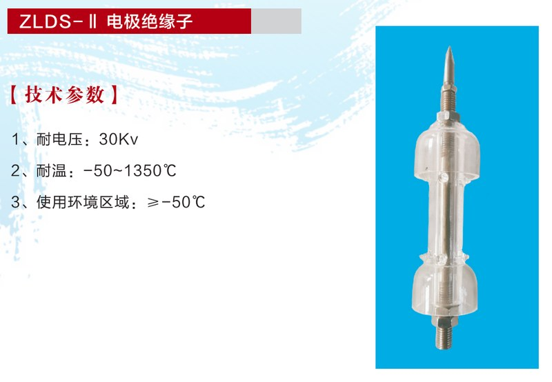
ZLDS-II 电极 / 支撑绝缘子
高纯石英玻璃材质，热膨胀系数仅5.5×10-7/°C；极高介电强度，高温高压高频下保持优异绝缘性能。
查看产品详情 →
ZL-GLX-II 高压裸线
高温合金材质，可经受火炬上部800°C-1200°C高温、火雨等恶劣工况；用于高空点火电极与高压发生器间的电能传输。
查看产品详情 →
火炬系统定制
我公司具备各类火炬系统的全套设计、制造、安装、调试能力，可根据用户提供的火炬参数（排放量、气体组分、背压、高度等）进行非标定制。以下为部分火炬系统类型实拍：
高架火炬

高架火炬
60~150m塔架式，适用于石化/煤化/炼化企业连续或紧急排放燃烧。

海上平台火炬
适用于海洋石油平台，耐盐雾腐蚀，紧凑型结构设计。
地面火炬

地面火炬（封闭式）
无烟燃烧，热辐射小，适用于厂区周边有环境敏感目标的工况。

地面火炬内部结构
多级燃烧器排列，分级燃烧控制，确保燃尽率≥99%。
火炬燃烧器（火炬头）

火炬燃烧器（一）
多孔蒸汽助燃型，适用于高架火炬无烟燃烧。

火炬燃烧器（二）
空气助燃型，低噪音设计，适用于中小排量火炬。

火炬燃烧器（三）
耐高温合金材质，可承受1200°C持续燃烧工况。
特殊火炬

煤气火炬
适用于焦炉煤气、高炉煤气等低热值气体燃烧排放。

酸性气火炬
耐H₂S/SO₂腐蚀，310S+哈氏合金材质可选，适用于含硫气体燃烧。

事故火炬
大排量紧急放空，瞬间处理能力可达1000t/h以上。

氢氰酸火炬燃烧器
特殊耐腐蚀设计，适用于丙烯腈/氢氰酸等化工装置尾气处理。
系统组成说明
排放系统
管廊 → 水气分离罐 → 水封罐 → 塔架 → 筒体 → 阻火器 → 燃烧器（火炬头）
点火系统
长明灯 → 高空点火器（电极→绝缘子→裸线→端子→发生器→控制箱）→ 地面点火器
仪表系统
热电偶 → 紫外/红外探测器 → 压力变送器 → 流量计 → DCS/SIS控制系统
需要定制火炬系统方案？请致电 0393-5389080 或 在线留言，提供火炬排放参数，24小时内出具初步方案。
产品对比速查表
以下对比表帮助快速选择适合您工况的产品：
| 产品型号 | 类别 | 适用场景 | 关键参数 | 专利/认证 |
|---|---|---|---|---|
| ZL-JTS | 高空点火器 | 60~150m高架火炬 | 双路7.5KV | -40~1250°C | 抗风≥12级 | ZL 2020 2 1157934.3 |
| ZL-YT-DHQ-I | 一体化点火器 | 锅炉/燃烧器/小型火炬 | 输入24-220V | 输出7.5-11KV | ZL 2022 2 2686852.3 |
| ZL-HBJ-I | 节能长明灯 | 高架火炬节能改造首选 | 耗气4~6Nm³/h | 实测2.45 | 节能93.5% | ZL 2020 2 2537666.4 |
| 组合式一体化 | 长明灯+点火器 | 需双重保障的高架火炬 | 耗气4~60Nm³/h | 自带火种 | ZL 2022 2 22357637 |
| 双风线长明灯 | 长明灯 | 多类火炬长明火工况 | 耗气4~16Nm³/h | 供气0.05~0.6MPa | ZL 2020 2 2537666.4 |
| ZL-JN-III | 节能长明灯 | 不同规模火炬灵活适配 | 耗气1.5~36Nm³/h可选 | 多规格可选 |
| ZLH-GY-I | 防爆发生器 | 1区/2区爆炸性气体环境 | Exd IIC T4 Gb | 7.5KV | IP54 | 国家防爆认证 |
| ZLH-GY-I-II | 防爆发生器 | 2区爆炸性气体环境 | Exe IIT6 | 7.5KV | 增安型 | 国家防爆认证 |
| ZL-DMB-C | 地面点火装置 | 地面内传焰点火 | 输入24-220V | 燃气0.1-0.6MPa | ZL 2022 2 5476692.6 |
| ZL-GY-DHQ-I | 高压电弧枪 | 锅炉/工业炉窑 | 输入24-220V | 输出7.5-11KV | ZL 2022 2 2686854.2 |
| ZL-ZWTC-I | 紫外火焰探测器 | 60~150m高架火炬 | 探测5~200m | 4-20mA+开关量 | Exd II CT6 Gb |
| ZL-ZWTC-II | 紫外火焰探测器 | 地面火炬/锅炉 | 探测5~100m | 视角120° | Exd II CT6 Gb |
| ZLDS-II | 石英绝缘子 | 所有火炬点火电极绝缘 | 耐压30KV | -50~1350°C | 高纯石英 | 专有技术 |
| ZL-GLX-II | 高压裸线 | 高空点火电极输电 | 耐压30KV | -40~1250°C | 高温合金 |
| 防爆热电偶 | 温度传感器 | 长明灯火焰监测/DCS联动 | 310S保护管 | ≥1.5m | 卡套式固定 |
如需定制选型方案，请致电 0393-5389080 或 在线留言，提供火炬图纸和运行参数，24小时内回复。